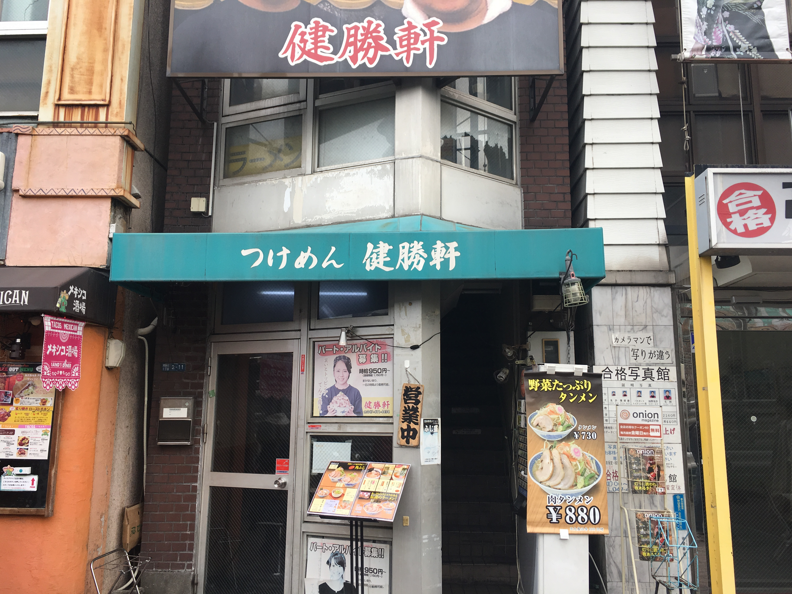

Distance from station
140 meters from JR Tsudanuma Station
phone number
047-411-4454
place
〒275-0016 2-11 Tsudanuma 1 - chome, Narashino City, Chiba Prefecture
business hours
11:00~25:00（Monday - Saturday） 11:00~22:00（Sunday · holiday）
Regular holiday
No holidays
・Return to the ramen list